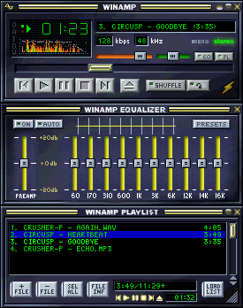
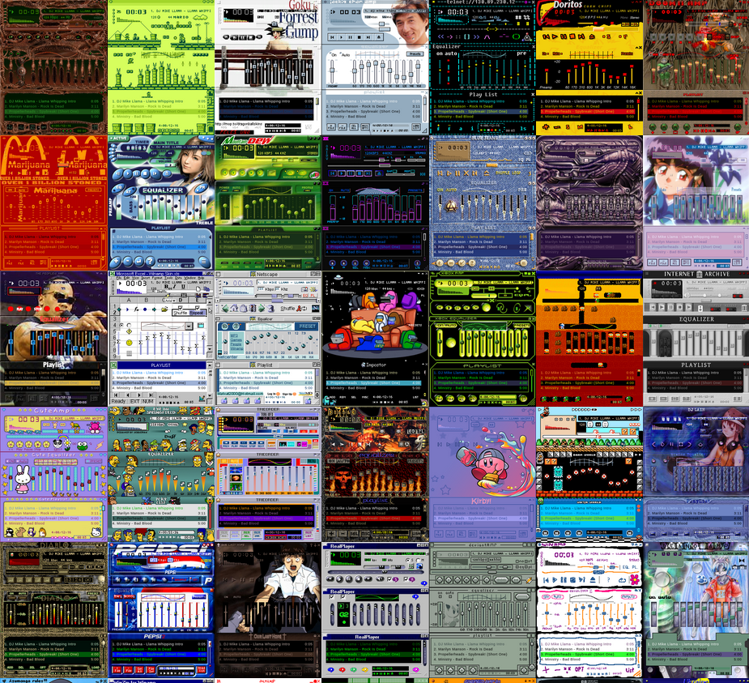
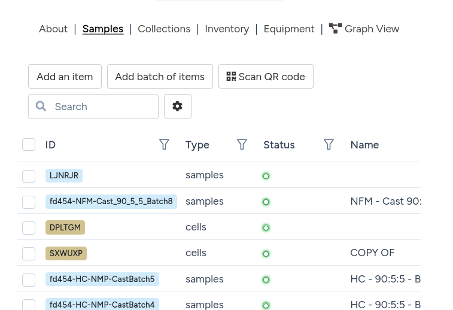

Research Computing in Python
#2 Practicalities — best practices for research software
2026-07-24
This course
- A biased take on what you need to get started using computers in research
- Not a computer science course, not exhaustive
- A mixture of high-level concepts, empirical truths and practical advice
- Not a real Python course, either - you can’t learn a language by reading the dictionary
Recap
- A century of hardware, one enduring idea: the stored program, fetch–decode–execute — everything else is miniaturisation
- Languages are abstractions over that machine: compiled ones (C, Fortran) stay close to it; Python trades machine time for your time
- Types are rules for reading bits — and every abstraction leaks (overflow,
0.1 + 0.2, “why is this slow?”) - Python hides the machinery in objects and dicts; when you need speed, offload to the compiled layer (NumPy) — or fix the algorithm first
Software is a living ecosystem
- Everything you’ve seen today changes: languages, libraries, hardware — software grows organically around historical biases (x86’s baggage, Fortran’s arrays, Python’s dicts)
- You are part of the ecosystem: the code you write and the tools you choose feed back into it
- So the same code will not always work, everywhere, forever — unless you fence it in: pinned dependencies, recorded environments, containerisation
This lecture: research programming in practice
- The Scientific Python stack
- Structuring your code: functions, modules, packages
- Environments and packaging, using uv
- Editors, terminals, and other tools of the trade
- Version control with git and GitHub
- Testing your code, and why it matters
- Research software engineering, as a discipline
- If we have time: AI code generation and agents: what changes, what doesn’t
NumPy and Mandelbrot
Scientific Python
Nearly all of it stands on one shared abstraction: the NumPy array.
- NumPy — the n-dimensional array: memory laid out like Fortran, driven from Python
- SciPy — the numerical toolbox: integration, optimisation, linear algebra, statistics, signal processing
- matplotlib — plotting (most of the figures in most of the papers you’ll read)
- pandas — labelled tables (“dataframes”) for messy real-world data
- Jupyter — notebooks: code, figures and narrative in one document
- scikit-learn — classical machine learning; PyTorch / JAX at the deep-learning end
- …and domain layers on top: astropy (astronomy), ASE / pymatgen (materials), RDKit (molecules), Biopython, MDAnalysis, …
NumPy: putting the speed back
Remember why arrays are fast — one contiguous block. NumPy brings that to Python:
One line of Python = one compiled loop over the whole block
The Mandelbrot set
Iterate one very simple map:
\[z_{n+1} = z_n^2 + c, \qquad z_0 = 0\]
for a complex number \(c\) — i.e. a point in the plane.
- The set is every \(c\) for which \(z_n\) stays bounded forever
- We can’t iterate forever, but there’s an escape test: once \(|z_n| > 2\), the orbit is gone for good — so iterate each pixel’s \(c\) up to
max_itertimes and colour it by when it escaped - The boundary is a fractal: infinitely detailed, new structure at every zoom
- And it’s a perfect benchmark: millions of pixels × hundreds of iterations of pure arithmetic, nothing to hide behind

Structuring your code
Functions, modules, packages
As a project grows, one script stops being enough. Python gives you a few levels of structure, each one built out of the last.
- A function groups a few lines of code under one name, so you can reuse it and so it can have a name that explains what it does (e.g.,
scipy.stats.linregress) - A module is a single
.pyfile of related functions and classes, which can be imported withimport my_module(e.g.,scipy.stats) - A package is a folder of modules that can be imported as a single unit, even though it contains many files (e.g.,
scipy)
Libraries vs applications vs scripts vs frameworks
Four words for four different shapes of software. Knowing which one you are looking at (or writing) tells you what to expect from it.
- A script is a short, linear program, meant to be run from start to finish, like
plot_experiment.pyfrom earlier. It is not usually imported by other code - A library (or package) is code written to be imported and reused. NumPy and Matplotlib are libraries: you never “run” NumPy, you import it
- An application is a complete, user-facing program built for a particular purpose, often assembled out of several libraries
- A framework is a library that calls your code, rather than the other way around. You write code that fits into its structure, and it takes charge of the overall flow
Common anti-pattern #1: hard-coded everything
import matplotlib.pyplot as plt
import numpy as np
expt_number = 7
file = "data/experiments/sample4.csv"
data_file = []
with open(file, "r") as f:
for line in f.readlines():
if (
line.startswith("nmr-sample4")
and line.split(",")[-1] == expt_number
):
data_file.append(",".join(line.split(",")[1:]))
with open("output.txt", "w") as f:
f.writelines(data_file)
data = np.loadtxt(
data_file, delimiter=",", skiprows=1, comments="%"
)
plt.scatter(data[:, 0], data[:, 1])
plt.title("Sample 4")
plt.savefig("/home/mevans/figures/sample4_expt7.png")Paths, sample names, and “constants” that should be arguments, all baked into the script.
What happens with sample 5?
The fix: wrap it in a function
def plot_experiment(
data_dir, sample_name, expt_number, output_dir
):
"""Scatter-plot one experiment's full spectrum
from a sample's CSV.
"""
file = data_dir / f"{sample_name}.csv"
data_file = []
with open(file) as f:
for line in f:
tag, *values = line.strip().split(",")
if (tag == f"nmr-{sample_name}"
and int(values[-1]) == expt_number):
data_file.append(",".join(values[:-1]))
data = np.loadtxt(
data_file, delimiter=",", skiprows=1, comments="%"
)
plt.scatter(data[:, 0], data[:, 1])
plt.title(f"{sample_name}, experiment {expt_number}")
plt.savefig(output_dir / f"{sample_name}_expt{expt_number}.png")- Every hard-coded value became a parameter, the function works for any sample, any experiment, any directory
- But where do we call it? A script?
…then a command-line script
if __name__ == "__main__":
import argparse
from pathlib import Path
parser = argparse.ArgumentParser()
parser.add_argument("sample_name")
parser.add_argument("expt_number", type=int)
parser.add_argument("--data-dir",
type=Path, default=Path("data/experiments"))
parser.add_argument("--output-dir",
type=Path, default=Path("figures"))
args = parser.parse_args()
plot_experiment(args.data_dir, args.sample_name, args.expt_number, args.output_dir)- The same function, now driven by whoever’s typing, not whoever’s editing
- Next step, when this function is useful to more than one script: package it up
Anti-pattern #2: all-in-one functions
The “good” function from before, but the lab now runs two instruments, and the second one’s output looks nothing like the first:
def plot_experiment(data_dir, sample_name, expt_number, output_dir):
"""Scatter-plot one experiment's full spectrum from a sample's CSV."""
file = data_dir / f"{sample_name}.csv"
data_file = []
with open(file) as f:
for line in f:
tag, *values = line.strip().split(",")
if tag == f"nmr-{sample_name}" and int(values[-1]) == expt_number:
data_file.append(",".join(values[:-1]))
data = np.loadtxt(data_file, delimiter=",", skiprows=1, comments="%")
plt.scatter(data[:, 0], data[:, 1])
plt.title(f"{sample_name}, experiment {expt_number}")
plt.savefig(output_dir / f"{sample_name}_expt{expt_number}.png")- The NMR-specific bits (the
nmr-tag, the CSV filtering) are now welded into a function whose name promises nothing instrument-specific - Supporting the second instrument means an
if fmt == ...:branch inside, and a third means another, and a fourth - Worse: to test the parsing, you now also have to test the plotting. One function, three jobs: read a format, extract data, draw a figure
The fix: one function per job
def parse_nmr(file, sample_name):
"""Parse every NMR row for one sample, all experiments together."""
data_file = []
with open(file) as f:
for line in f:
tag, *values = line.strip().split(",")
if tag == f"nmr-{sample_name}":
data_file.append(",".join(values))
return np.loadtxt(data_file, delimiter=",", skiprows=1, comments="%")
def parse_xrd(file):
"""Parse the XRD instrument's whitespace-delimited export."""
return np.loadtxt(file, skiprows=3)
def parse(file, sample_name, fmt):
"""Parse one experiment file, whatever instrument it came from."""
if fmt == "nmr":
return parse_nmr(file, sample_name)
elif fmt == "xrd":
return parse_xrd(file)
else:
raise ValueError(f"unknown format {fmt!r}")
def plot_experiment(data, sample_name, expt_number, output_dir):
"""Scatter-plot one experiment's spectrum, picked out of parsed data."""
spectrum = data[data[:, -1] == expt_number]
plt.scatter(spectrum[:, 0], spectrum[:, 1])
plt.title(f"{sample_name}, experiment {expt_number}")
plt.savefig(output_dir / f"{sample_name}_expt{expt_number}.png")- Parsing and plotting are now separate functions, each does one job, and each can be tested on its own
- A new instrument means writing one new
parse_*function and adding oneelif, nothing else changes plot_experimentpicks its own rows out with a mask, the samearr[arr > 1.2]trick from the NumPy slide,data[:, -1]is theexpt_numbercolumn, kept alongsidexandy
…and now, for free: plot many experiments
Because parsing happens once and plotting is separate, looping is trivial, and the file is only read once, not once per experiment:
def plot_experiments(data_dir, sample_name, expt_numbers, fmt, output_dir):
"""Plot several experiments from the same sample in one go."""
file = data_dir / f"{sample_name}.{fmt}"
data = parse(file, sample_name, fmt)
for expt_number in expt_numbers:
plot_experiment(data, sample_name, expt_number, output_dir)def compare_samples(data_dir, sample_names, expt_number, fmt, output_dir):
"""Overlay one experiment from several different samples on one plot."""
for sample_name in sample_names:
file = data_dir / f"{sample_name}.{fmt}"
data = parse(file, sample_name, fmt)
spectrum = data[data[:, -1] == expt_number]
plt.scatter(spectrum[:, 0], spectrum[:, 1], label=sample_name)
plt.legend()
plt.savefig(output_dir / f"comparison_expt{expt_number}.png")plot_experimentsdidn’t exist before, and cost almost nothing to write, it’s just a loop over a function we already had and trusted- That’s the real payoff of splitting responsibilities: not tidiness for its own sake, but new capability from recombining small pieces
compare_samplesloops over files, not experiment numbers, and adds each one to the same plot instead of saving a new figure every time.plot_experimentdoesn’t fit here, it saves and closes a figure per call, so this is a genuinely new, small function, built directly onparse()again
…or export to something generic
plot_experiment isn’t the only thing that can consume parsed data. Remember JSON, from last time?
import json
def export_json(data, sample_name, expt_number, output_dir):
"""Save one experiment's spectrum as JSON, for any tool to read."""
spectrum = data[data[:, -1] == expt_number]
record = {
"sample": sample_name,
"experiment": expt_number,
"xy": spectrum[:, :2].tolist(), # ndarray isn't JSON-serialisable
}
with open(output_dir / f"{sample_name}_expt{expt_number}.json", "w") as f:
json.dump(record, f)- Same
parse(), samedata, a completely different destination. A PNG is for you; JSON is for a colleague’s script, a website, a database .tolist()matters:json.dumpdoesn’t know what a NumPy array is, convert to plain Python first, at the boundary- This is only possible because parsing was split from plotting in the first place
Interfaces, e.g., Winamp


What is a computer interface?
An interface is the surface where two different things meet, a person, or another program, and your code.
- A function is the interface between one piece of code and another: its arguments and return value are the whole contract
- A command-line interface (CLI) is the interface between a person, or a script, and a program run from a terminal, like
plot_experiment.pyfrom earlier today - A library or package is the interface between your code and anyone else’s code that wants to reuse it, once it can be installed and imported
- A web API is the interface between programs running on entirely different computers, talking over the network, usually by exchanging JSON, exactly like the file exported a few slides ago
- A graphical user interface (GUI), like Winamp’s window, or a website, is the interface between a person and a program, with no command to type
Case study: datalab’s interfaces
datalab, mentioned on the very first slide of this course, is one underlying platform with several different interfaces built on top.
A plain web request, the interface for any program at all:
The web interface, for a person:

- The core logic and the web API are both tested with
pytest: ordinary unit tests for the logic itself, and tests that send real requests to the API and check what comes back - The web interface is tested with Cypress, which drives a real browser automatically, clicking buttons and filling in forms the way a person would, and records a video of every run
- Different interfaces, tested in different ways, but all built on the same handful of ideas from this lecture: write the test, run it automatically, trust the result
Live: a recent Cypress run, played from the cloud dashboard.
Developer environments
Editor and terminal
- A good editor adds autocompletion, inline documentation, error checking, a debugger, and version control, all while you type, catching many mistakes before you even run the code
- VS Code https://code.visualstudio.com is a popular, free choice with excellent Python support through extensions (unfortunately developed by Microsoft)
- Extensions are third-party code with real access to your files: install only official ones for the language you are using (for Python, Microsoft’s own “Python” and “Pylance”), and treat unsolicited “recommended extension” prompts with real scepticism, not automatic trust
- Learn to be comfortable in a terminal and shell too, bash or zsh: most of today’s tools,
uv,git,pytest, are run from the command line, and it is often the fastest way to work - Jupyter notebooks are excellent for exploring data, but ordinary
.pyfiles in a proper editor are usually better for anything meant to be kept, reused, or shared. Worth saying if there is time.
Live in this lecture: a short click-through tour of VS Code, and a look at its built-in debugger.
A hammer, first and foremost
A code editor should, before anything else, be an excellent plain text editor. Everything else it offers is only worth having on top of that foundation, not instead of it.
Virtual environments
Your computer probably already has a Python installed, maybe several. Installing every package you ever need into that one, shared Python is how projects end up fighting each other.
- Different projects need different, sometimes incompatible, versions of the same library: one needs NumPy 1.x, another needs NumPy 2.x
- Installing everything into one global Python turns your computer into a fragile, one-of-a-kind setup that is hard for anyone else, including you in six months, to reproduce
- A virtual environment is a self-contained copy of Python and its installed packages, kept in its own folder, one per project
- Treat environments as cattle, not pets: if one breaks, delete it and rebuild it from a written record of what it needs, rather than nursing it back to health
Common pitfalls without a virtual environment
- “It works on my machine”: your script quietly depends on a package version that happens to be installed on your laptop, and fails for someone else, or for you on a different computer
- Installing a new project’s dependencies can silently upgrade or downgrade a package that an older project relies on, breaking code that used to work “dependency hell”
- Libraries usually specify fairly precisely which versions of their own dependencies they need, but older tools did not always check this properly against what was already installed, and could leave a genuinely broken combination in place without so much as a warning
- Installing packages without a virtual environment can need administrator permissions, or install into the wrong Python entirely, which is a particular hazard on shared machines like a university cluster
- With no written record of what is installed, nobody, not even you in a year, can say exactly what a script needs to run
The saviour: uv
uv is a single, fast tool that replaces most of the separate tools that used to be needed to manage a Python project: pip, conda, venv, virtualenv, pip-tools, and pyenv, among others.
uv init my-projectcreates a new project, with its own isolated environment and its own list of dependenciesuv add numpyadds a dependency, installs it into the project’s environment, and records the exact version installeduv run script.pyalways runs your code inside the correct, up-to-date environment, with no separate “activation” step to rememberuv.lockis a complete, exact record of every installed package and its version, so the environment can be recreated identically on another machine, or in a year’s time- You can then reinstall exactly the same environment with
uv sync.
Testing
Why test your code?
Writing tests can feel like it slows you down, since it is extra code that produces no new results by itself. In practice, it saves time overall, because it catches mistakes early, while they are still cheap to fix.
- A bug caught the moment you introduce it costs a minute to fix. The same bug, caught after it has quietly shaped three months of results, costs far more
- Tests are a safety net: they let you restructure code, like splitting one function into several, with confidence that nothing has broken
- Once there is enough code, you stop understanding it by reading every line, and start understanding it by how it behaves. Tests are the systematic version of that: a description of the behaviour you expect
- Tests are also documentation: they show which functions are the important entry points and workflows, and exactly how each one is meant to be used, more reliably than a comment that can quietly drift out of date
- Testing and documentation matter most for collaboration, especially collaboration with your past self, who will not remember why a piece of code was written the way it was
Testing in Python: pytest
pytest is the standard tool for writing and running tests in Python. A test is a function whose name starts with test_, that checks something is true using a plain assert.
- Put tests in files named
test_*.py, with functions namedtest_*.pytestfinds and runs them automatically, no registration needed - Run the whole test suite with one command:
uv run pytest - A failing test prints exactly which
assertfailed, and the values involved, so you can see straight away what went wrong
What makes a good test?
- It exists Even a trivial test that just imports the code and runs it once catches the vast majority of problems someone else will actually hit: a broken install, a missing dependency, a typo that stops everything before it starts
- Real examples come next. Test against actual data, or a small, realistic version of it, not numbers invented purely because they were convenient to type
- Real numbers matter too. Pin down a known, checked value, and assert the code still produces it, so a change that quietly shifts a result gets caught the moment it happens, not months later in a paper
- Combinations of arguments and testing functions together Test the edge cases and unusual inputs together, not just the one case the function happened to be written for
Collaboration, version control, and GitHub
Version control
Version control is a system for recording the history of changes to a set of files over time.
- Every change is saved as a snapshot, with a short message explaining what changed and why, building a complete history of a project
- You can return to any earlier point, see exactly what changed and when, and work out why something broke
- Several people can edit the same files without overwriting each other’s work
- git is by far the most widely used version control system, in research and in industry, and is worth learning properly
For a proper hands-on treatment, see the dedicated git-tutorial.
git and GitHub
git tracks history on your own computer. GitHub, and similar sites like GitLab, host a copy online, so it can be shared, backed up, and collaborated on.
- Commit: a saved snapshot of the project, with a message describing the change
- Branch: an independent line of development, so you can try something new without touching the working version
- Clone: download a full copy of a project, including its entire history, from GitHub to your own computer
- Fork: your own copy of someone else’s GitHub project, which you can change freely, most often used to propose changes to a project you don’t have direct write access to
- Pull request: a request to merge your changes into someone else’s project, or another branch, with a chance for discussion and review before anything is merged
- Merge: combining the changes from one branch, or pull request, into another
GitHub story: navani
navani started, like a lot of research software does, as a set of scripts Ben Smith wrote during his PhD to process battery cycler data.
- Other people in the group hit the same problem, reading awkward, instrument-specific file formats, so the scripts were tidied into a proper package, with the same parse-then-do-something shape as today’s demo
- It was published on PyPI, so installing it became one line,
uv add navani, instead of emailing someone for a script - Once it was public, people outside the group started using it, and started filing issues on GitHub asking for new instrument formats to be supported
- New formats have since been added by contributors well beyond the original group, each one arriving with an issue describing the format, and tests to prove it parses correctly
We also have a Grey Group GitHub!
Research software engineering (RSE)
Put together, everything in this lecture, structuring code, managing environments, version control, and testing, is what the growing field of research software engineering is about.
- RSE is the practice of applying professional software engineering skills to research code, and is now a recognised career path, with its own community, conferences, and job title: a Research Software Engineer
- The goal is not software for its own sake: it is making research faster, more robust, and more reproducible, so results can be trusted and built upon
- Good RSE practice removes duplication of effort: instead of every student in a group writing their own slightly different parser for the same instrument, there is one, tested, shared version
- It is a process, not an end goal: environments get updated, tests get added, code gets refactored, continuously, alongside the science itself
RSE community
You can join the UK’s RSE society https://society-rse.org/ who host events, training and job boards
You could even join the RS-Triple-E https://east-england.society-rse.org/), the East of England RSE group, who meet monthly in Cambridge and online (spoilers: I run this)
Supposedly there are careers doing this work specifically in academia, with 40 groups in the UK
Wrap-up
Not covered
- Logging: beyond print statements to figure out what your code is doing
- Debugging: beyond print statements (again) to find out why it is doing it
- Linting and code style: enforcing best practices automatically (ruff, mypy etc.)
- Packaging and publishing: beyond a single project, how to make your code installable and reusable
- Continuous integration: beyond running tests locally, how to run them automatically on every change
- Documentation: beyond docstrings, how to make your code understandable to others
Take-home messages
- Nobody in this room needs to do all of this, every time, but knowing about the process and adopting it where necessary is important:
- structuring your code
- testing
- version control
- collaboration
- This is not an academic ideal. It is how almost every company, software or otherwise, actually operates.
- AI doesn’t solve this – the coordination problem of software development still exists
Further reading
- Software Carpentry: https://software-carpentry.org/
- Intermediate RSE with Python https://carpentries-incubator.github.io/python-intermediate-development
- Git tutorial (by me) https://github.com/ml-evs/git-tutorial
- Accelerate course (Cambridge): https://science.ai.cam.ac.uk/resources/python-programming-for-science
- Part II Computational Physics (Cambridge): https://computational-physics.tripos.org/
- CS50 Introduction to Computer Science and CS50P Python (Harvard): https://cs50.harvard.edu/python/
AI code generation and agents (optional)
Chat windows versus coding agents
Most people’s first experience of AI and code is a chat window: paste in a function, ask a question, copy the answer back into the editor by hand.
- A chat tool like ChatGPT sees only what you paste in, and its answer only exists as text in a chat window. Every change still has to be copied back by hand
- A coding agent, sometimes called a harness, instead runs alongside the actual project: it can read files, run tests, execute commands like
gitoruv, and edit files directly - That difference matters in practice: an agent that can run
pytestitself, see a failure, and try again is doing something a copy-paste chat window structurally cannot - Claude Code, GitHub Copilot’s agent mode, Cursor, and OpenCode are all harnesses in this sense, not just chat windows
- Lots of free options out there!
Vibe coding vs pair programming
- Agents will not do RSE for you (unless you tell them)
- A coding agent is very good at producing code that matches whatever it is shown. It is not, by itself, good at deciding whether code should be well structured, tested, or version controlled.
- An agent pitches its code to your level: if the surrounding codebase is one long hard-coded script, that is what it will tend to extend
- Left unprompted, an agent will happily produce a working, untested, unstructured function, because “it ran successfully” is often enough to satisfy the request as asked
- Everything from this lecture is still something you have to ask for, or set up once so it happens by default: clear responsibilities, a proper environment, tests, sensible commits
- The tools change fast. The judgement about what good research software looks like does not, and that judgement is the actual subject of this course
An AI coding tool is most helpful when you already know what you want to write, and can tell whether what it produces is actually correct (via tool calls to e.g., run tests).
How this deck actually got made
- Every slide here was built one at a time, across many sessions, in conversation with Claude Code, not generated from a single prompt
- Real commands ran the whole way through: compiling C and Fortran, timing the Mandelbrot demos, checking image licences before downloading anything, and once, tracking down a genuine compiler bug in a Fortran
do concurrentloop - Plenty of ideas were tried and then undone. A “try it yourself” box got added, then removed the same afternoon, because it did not feel right
- One rule applied to every new slide in this lecture: no em dashes, anywhere. The next slide is what happens the moment that rule gets lifted, on purpose
Research Computing with Python